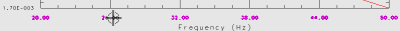
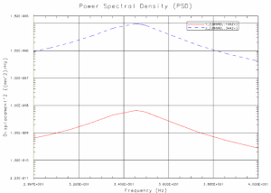
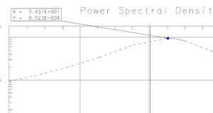

Analyze the function response
Observe the peak displacement at the excitation frequency that is close to the frequency of the active normal mode.
 Editing (XY Graph toolbar, Edit Drop-down list)
Editing (XY Graph toolbar, Edit Drop-down list)
|
Note |
You may need to turn on the XY Graph toolbar. |
-
.gif) the X-axis (the axis line itself)
the X-axis (the axis line itself)
-
Axis Type
Linear

-
OK
X-Axis Options dialog box
-
the label text for the X-axis

-
Numbers
-
Format
X.XXXEXX
-
OK
X–Axis Options dialog box
The X-axis number format now matches the format in which the normal mode frequencies are reported.
Because the most significant damped natural frequency in this simulation is at 3.480E+001 Hz, zoom in the on the region of the graph between 3.000E+001 Hz and 4.000E+001 Hz.
Zoom by X Only (XY Graph toolbar, Window Drop-down list)
-
 on the 3.000E+001 Hz grid line
on the 3.000E+001 Hz grid line
-
on the 4.000E+001 Hz grid line
-

Note
If you have made your NX window narrow to fit alongside the tutorial window, you should expand it across the width of your screen for this step; otherwise, you may not be able to read the frequency values in the graph.
 Peak Probing Mode (XY Graph toolbar, Data Track Drop-down list)
Peak Probing Mode (XY Graph toolbar, Data Track Drop-down list)
-
the peak in the plot for function 2
Drag the marker to an area on the graph where you can read the values.

Notice that the peak displacement occurs at around 3.451E+001 Hz in the node at the end of the bottom face (response function 2), when the excitation frequency is close to the normal mode frequency of 3.480E+001 Hz.
 Return to Model (Layout Manager toolbar)
Return to Model (Layout Manager toolbar)